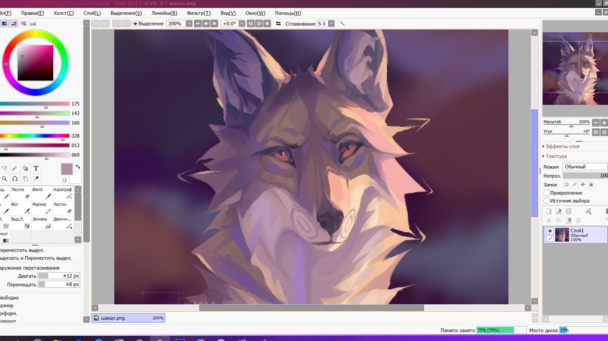
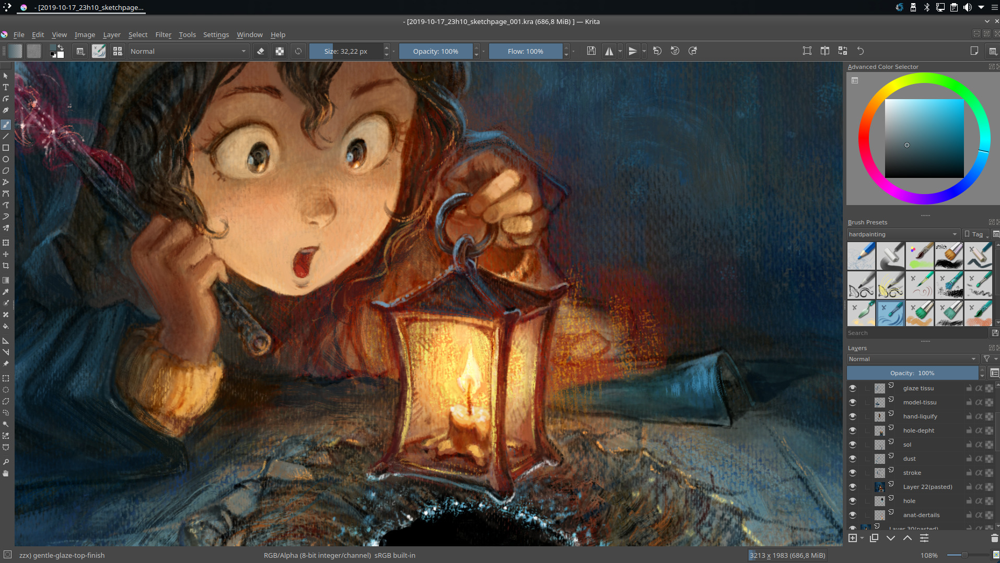
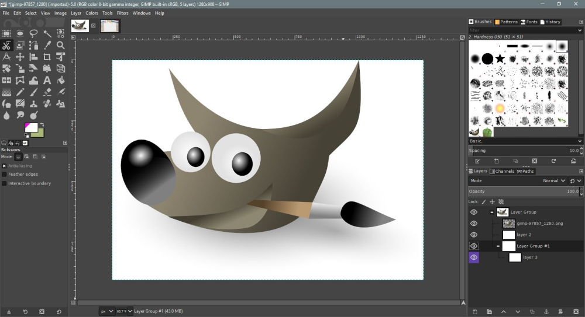
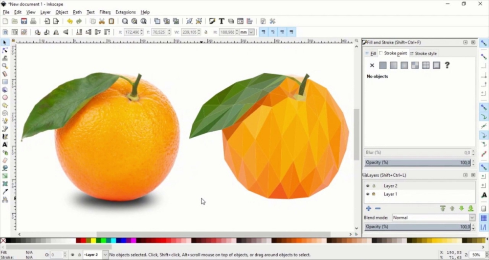
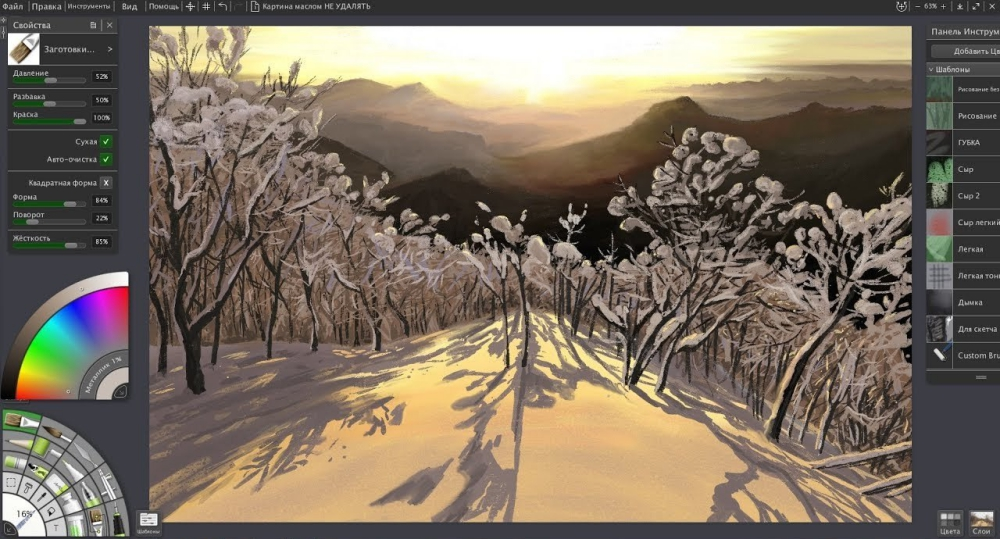

Программы для рисования
Здесь вы найдете информацию о проверенных программах для рисования, лично отобранных создателем сайта.
Sai Paint Tool
Sai Paint Tool создан японцами и ориентирован на поклонников аниме и манги. Однако это не значит, что в редакторе нельзя рисовать ничего другого. Приложение относится к типу растрово-векторных. Наиболее популярные базовые инструменты для рисования – это «Аэрограф», «Карандаш», «Перо», «Заливка» и «Ластик». В данной программе вы сможете работать со слоями как отдельно, так и сгруппировав их. Также в редакторе есть возможность использовать «горячие клавиши», что значительно экономит время.
Плюсы:
- Удобный минималистский интерфейс.
- Есть поддержка русского языка.
- Возможность подключения графического планшета.
- Кисть («Brush») создает эффект рисования маслом.
- Отлично реализована функция заливки.
Минусы:
- Программа является условно-бесплатной.
- Не предусмотрена возможность нанесения текста.
- Нет фигурной графики, градиентных фильтров и вообще невозможна последующая обработка картинки.
Krita
Krita изначально задумывалась как инструмент для создания иллюстраций с нуля. Но сейчас она уже успешно конкурирует с Adobe Photoshop, поскольку имеет богатый набор инструментов, позволяющих редактировать уже готовые цифровые снимки.
Krita имеет одну особенность — это программа с открытым исходным кодом, то есть каждый желающий человек, обладающий необходимыми навыками, может модифицировать редактор под свои нужды. Например, можно загрузить новые кисти.
Krita — это бесконечный виртуальный холст с огромным выбором кистей. Благодаря специальному менеджеру вы можете использовать кисти, созданные другими пользователями. Есть функция отзеркаливания: по горизонтали и вертикали, а также вращения рисунка при помощи инструмента Multibrush. Krita может использоваться для создания артов, скетчей, комиксов и рисунков с 3D-эффектом.
Плюсы:
- Программа полностью бесплатная.
- Устанавливается на все известные операционные системы.
- Имеет готовый набор разнообразных эффектов и фильтров.
- Взаимодействует с графическими планшетами.
- Присутствует функция автосохранения.
Минусы:
- Большинство инструкций на английском языке.
Gimp
Gimp – это свободно распространяемый графический редактор, предназначенный, в основном, для работы с растровыми изображениями. GIMP имеет большую библиотеку фильтров, спецэффектов и полный пакет всех необходимых для рисования инструментов. Можно провести тонкую настройку каждого инструмента в отдельности: определить толщину контура, прозрачность, форму и проч. Поддерживает установку сторонних плагинов.
Плюсы:
- Разработаны версии не только для платформы Windows, но и для Mac/Linux.
- Поддерживает всевозможные графические форматы.
- Есть функция подключения сторонних модулей для расширения возможностей редактора.
- Можно скачать бесплатно.
Минусы:
- Из-за обилия функций и кнопок тяжело разобраться с интерфейсом.
Inkscape
Inkscape – это Инструмент для создания векторной графики. Inkscape применяется для выполнения художественных и технических иллюстраций. Будет востребован в сфере рекламы: при изготовлении баннеров, логотипов и разнообразных коммерческих проектов.
Плюсы:
- Работать в программе можно бесплатно.
- Имеет меню на русском языке.
- Автоматическая отрисовка различных объектов.
- Обилие фильтров, имитирующих различную текстуру.
Минусы:
- Не дотягивает по функционалу до своего платного собрата Adobe Illustrator.
ArtRage
ArtRage – это программа-эмулятор масляной живописи. ArtRage реалистично имитирует настоящие краски: акварель, пастель, масло, причем с последним выходит лучше всего – рисунок приобретает трехмерный объем. Создается впечатление, что работа была выполнена не в графическом редакторе, а в художественной студии.
Плюсы:
- Дружественный, интуитивно понятный интерфейс.
- Возможность смешивать разные типы красок.
- Наличие режима Auto clean.
- «Грязная» кисть помогает создавать градиенты для усиления эффекта трехмерности.
- Хорошо сочетается с планшетами типа Wacom.
Минусы:
- Программа платная.